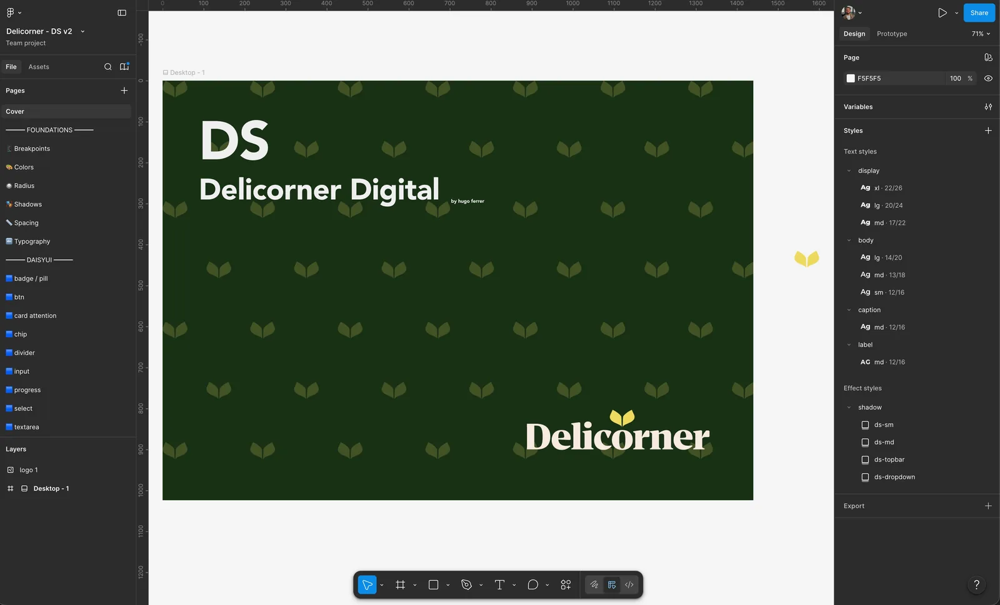
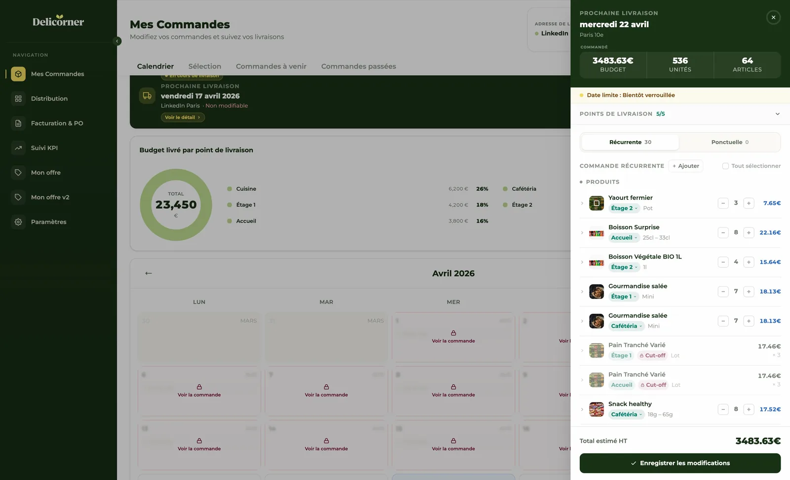
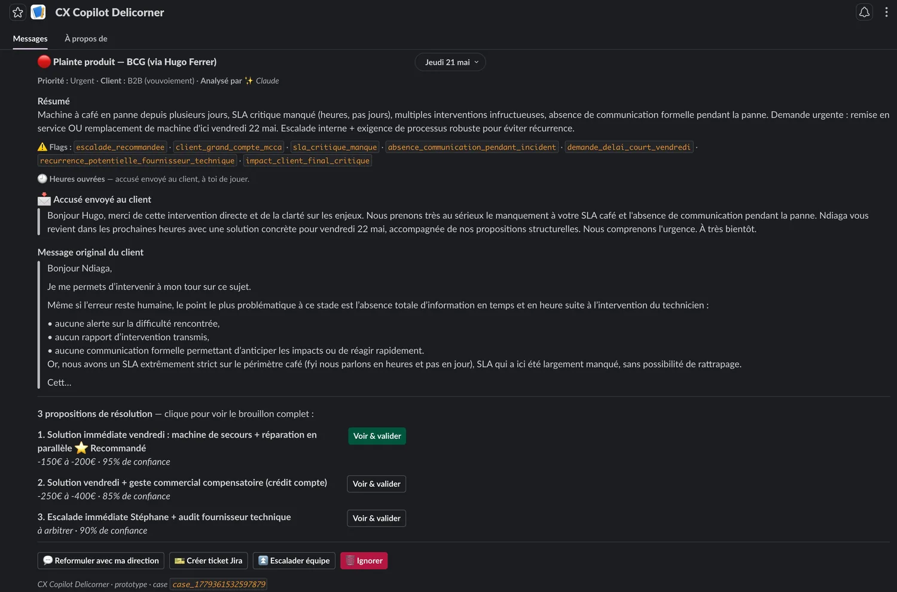
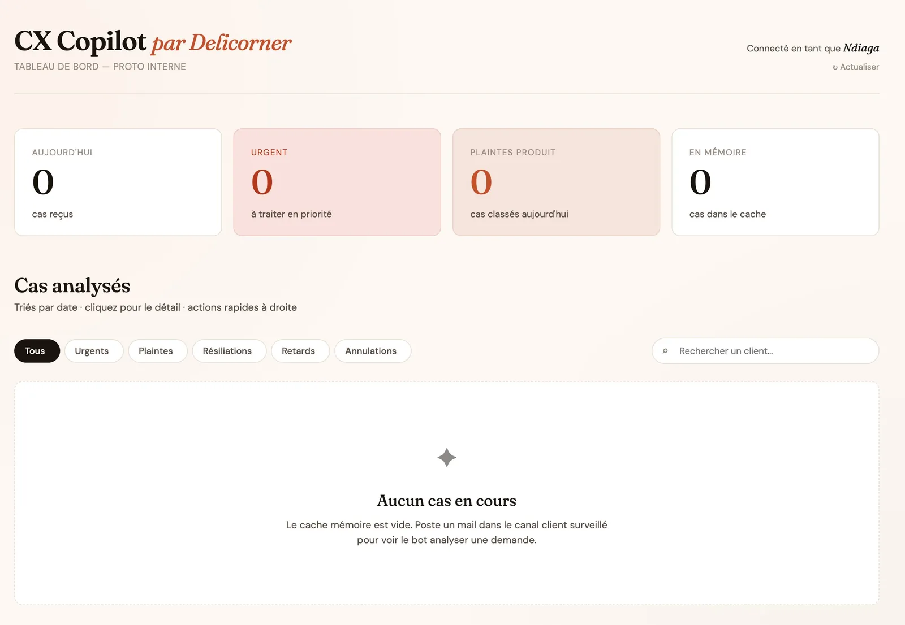
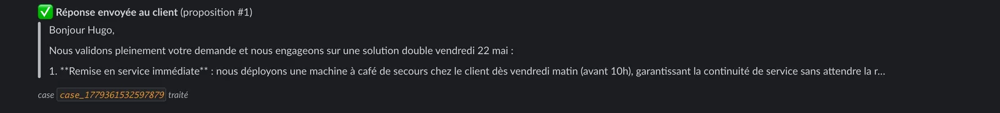

Deux chantiers, une même exigence
Délicorner livre des produits alimentaires premium en B2B et pilotait un MVP de portail client avec une PM freelance, sans fondation design. J'ai pris deux sujets de front : structurer le produit et son design system pour le rendre testable et industrialisable, puis attaquer un point de douleur opérationnel (la surcharge des équipes CX) avec un copilote IA.
Les deux cas suivent volontairement la même trame (Problème → Approche → Système → Résultat), parce qu'ils répondent à la même conviction : un bon design réduit la friction, qu'elle soit côté interface ou côté process.
Portail client B2B & design system, de zéro à livré en 2 semaines
Une chaîne design-to-code pensée pour la vitesse sans sacrifier la rigueur.
Le problème
Délicorner devait lancer Corner Digital sans design system : une charte graphique d'entreprise existait, mais aucune fondation systématisée côté produit. Il manquait la couche design qui permette à la fois de tester vite auprès d'utilisateurs réels et de livrer aux développeurs quelque chose de réutilisable, cohérent et industrialisable.
Le défi : passer d'une charte statique à un système vivant, accessible et exploitable par la tech avec l'IA, dans un délai très court.
L'approche
Six étapes, du token jusqu'au design system exploitable par l'IA :
Fichier de tokens au standard DTCG dérivé de la charte. Une source de vérité unique, déclinable.
Récupération des composants depuis Storybook vers Figma, reliés aux mêmes tokens, en 1 clic. Alternative gratuite à story.to.design.
Un proto haute-fidélité réellement fonctionnel pour des tests, construit à partir du MVP de la PM.
Sessions avec 3 clients (Hellowork, NVIDIA, Databricks) pour déceler la friction avant industrialisation.
Variables, tokens, styles et composants, réalisés avec Claude Code et alignés sur la stack tech : Angular, Tailwind, DaisyUI (naming compris).
DS structuré pour la génération assistée (Figma Make, Claude Code, Codex) : la boucle design → dev → IA est fermée.
Le système
Le cœur : un token unique se propage à N composants, synchronisés en un clic entre Storybook, le code et Figma.
Tokens
Fichier DTCG dérivé de la charte, source de vérité unique.
Composants
Générés et synchronisés via le plugin Storybook→Figma, fidèles 1:1 aux tokens et variables.
Stack cible
Angular + Tailwind + DaisyUI, naming aligné sur le code existant.
Organisms & charts maison
side-panel, calendar, catalog-picker, donut/line/grouped-bar charts, documentés (anatomy, slots, do/don't).
Exploitabilité IA
Structuré pour la génération assistée (Figma Make / Claude Code / Codex).
La preuve dans Figma

Le portail en images
Le prototype hi-fi fonctionnel : commande récurrente, catalogue filtrable, suivi budgétaire et logistique multi-points, du desktop au mobile.

Le résultat
- Charte d'entreprise figée, non systématisée côté produit.
- Aucune source de vérité partagée design ↔ dev.
- Hand-off artisanal, peu réutilisable.
- +106composants reliés aux tokens (~102 variables sur une source unique)
- 1 clicpour importer les composants réels, via un plugin maison Storybook→Figma, sans outil payant
- 3clients en test (Hellowork, NVIDIA, Databricks), friction corrigée tôt
Chaîne design-to-code rejouable : adoption design → dev fluidifiée, friction produit corrigée avant industrialisation.
Un bot Slack IA pour combattre le churn et libérer les équipes CX
Branché là où les équipes travaillent déjà : centraliser, prioriser, accélérer.
Le problème
Les équipes CX traitaient plus de 100 demandes par personne et par jour, dispersées sur plusieurs canaux (Slack, Front, HubSpot). Résultat : temps de réponse long, frustration client, risque de churn, et des CX mobilisés sur des tâches à faible valeur plutôt que sur ce qui compte.
Le défi : répondre vite et juste sans alourdir l'outillage, en restant dans Slack, là où les CX sont déjà.
L'approche
Un copilote conversationnel qui analyse chaque demande client, propose des résolutions chiffrées et déclenche les bonnes actions, le tout en quelques secondes.
Reconstitution animée du flux réel : message → analyse → priorisation → quick actions.
- Réponse rapide et personnalisée pour limiter frustration et churn.
- Réponses pragmatiques, directement exploitables par le CX.
- Ouverture de ticket HubSpot en un geste, depuis Slack.
- Dashboard multicanal : toutes les demandes, priorisées, avec quick actions.
Le système
Interface
Bot branché à Slack, là où les CX travaillent déjà.
Actions
Création de ticket HubSpot en un geste, quick actions depuis le dashboard.
Pilotage
Dashboard centralisant les canaux, demandes priorisées automatiquement.
Stack
Vercel + Claude Haiku, agrégation Slack / Front / HubSpot.



Le résultat
- Réponse en 5 à 6 h en moyenne, parfois la semaine suivante.
- Demandes éparpillées sur Slack, Front & HubSpot.
- Tri et réponses 100 % manuels.
- +100demandes/CX/jour centralisées & priorisées automatiquement
- +3 hrécupérées par CX/jour (2–3 h) sur des tâches à valeur
- < 5 €de coût d'exploitation/mois (Vercel + Claude Haiku)
Levier anti-churn direct : priorisation automatique, quick actions, et ticket HubSpot ouvert en 1 clic depuis Slack.
Hugo a su gérer les délais et livrer des travaux de qualité dans un contexte d'incertitude et de changements fréquents.
Les missions réalisées incluaient notamment :
- la création d'un design system from scratch,
- du wireframing high-fidelity,
- des tests utilisateurs basés sur des prototypes réalisés avec de l'IA.
Hugo est également une personne très compétente sur les sujets liés à l'IA et saura vous apporter beaucoup, aussi bien sur les aspects stratégiques qu'opérationnels.
Un produit B2B complexe, un design system à poser, l'IA à embarquer ?
J'accompagne les équipes produit sur les interfaces à forte logique métier, les design systems industrialisables et l'IA appliquée aux workflows. Parlons de votre prochain chantier.
Réponse sous 48h. Disponible en CDI, régie ou mission ciblée.